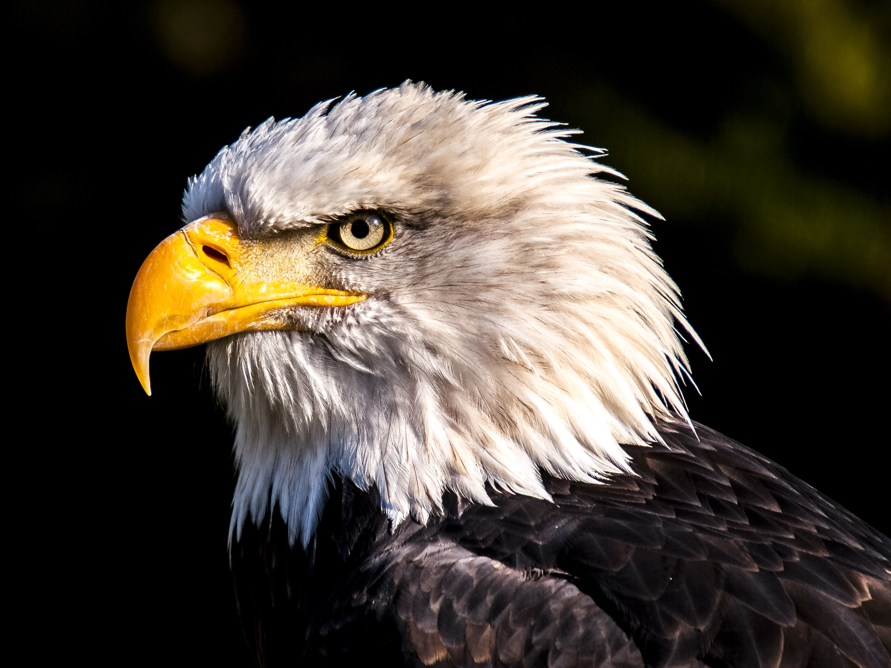
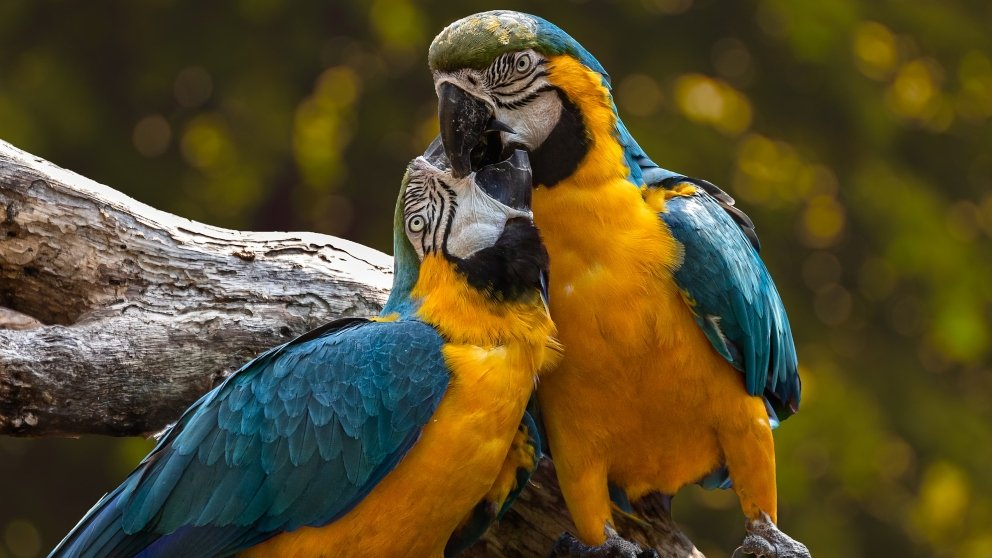
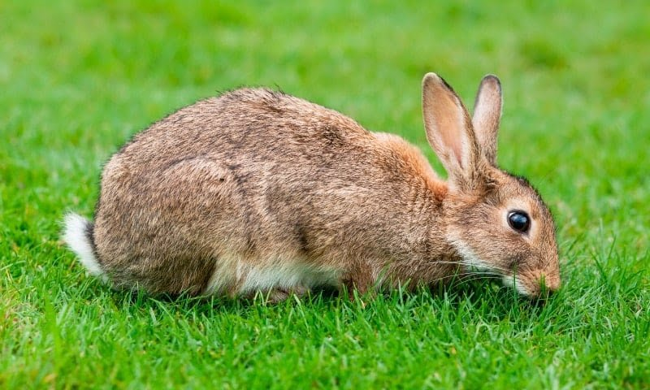

Zoó Aventura Salvaje
Aguila calva
El águila calva (Haliaeetus leucocephalus), también conocida como águila americana, águila de cabeza
blanca, pigargo de cabeza blanca o pigargo americano,[2] es un ave rapaz accipitriforme[3] de la
familia Accipitridae, que habita en América del Norte, del sur de Canadá a Baja California Sur y
Sonora en México. Es un águila grande de color negruzco con la cola y la cabeza blancas. Es el
símbolo nacional de los Estados Unidos de América: incluso figura en el Escudo Nacional de ese país.
Está como en peligro de extinción (P) en México por la NOM-059-SEMARNAT-2010 y clasificada com de
preocupación menor (LC) por la lista roja de la IUCN.
Esta especie estuvo a punto de extinguirse en Estados Unidos a fines del siglo XX, pero su población
se ha estabilizado y va en camino de ser retirada de la lista de especies en peligro del Gobierno de
los Estados Unidos.
Los ejemplares inmaduros tienen plumaje pardo bataraz; la cabeza distintiva blanca y su cuerpo
desarrollado surge de dos a tres años más tarde, antes de la madurez sexual.
Esta especie se distingue del águila real por la cabeza parda de aquella y sus
últimas plumas, que se extienden más abajo de sus patas.
Los especímenes más pequeños son los de Florida. Un adulto macho pesa 2,3 kg y tiene una envergadura
de 1,8 m. Los más grandes son los de Alaska; las hembras pueden exceder los 7 kg y tener una
envergadura de aproximadamente 2,5 m.
La dieta del águila calva es oportunista y variada, aunque se alimentan principalmente de peces. En
la costa noroeste del Pacífico, la trucha y el salmón constituyen la mayor parte de su
alimentación.[9] A nivel local, sin embargo, el régimen puede diferir sustancialmente del patrón
general. En algunas situaciones, sobre todo en invierno, puede comer carroña de ballenas y focas. En
la pesca, ya que no entra en el agua como el águila pescadora, mira los peces muertos o moribundos
en la superficie del agua. Captura anguilas y peces voladores mediante sus poderosas garras. El
águila calva es capaz de nadar si se siente amenazada o en peligro de ahogarse. es unade las mas
impresionantes aves.
Tigre Bengala

El tigre (Panthera tigris) es una de las cuatro especies de la subfamilia de los panterinos
(familia Felidae) pertenecientes al género Panthera.
Se encuentra solamente en el continente asiático; es un predador carnívoro y es la especie de félido
más grande del mundo junto con el león pudiendo alcanzar ambos un tamaño comparable al de los
fósiles de félidos de mayor tamaño.
Existen seis subespecies de tigre, de las cuales la de Bengala es la más numerosa; sus ejemplares
constituyen cerca del 80 % de la población total de la especie; se encuentra en la India, Bangladés,
Bután, Birmania y Nepal. Es una especie en peligro de extinción, y en la actualidad, la mayor
parte de los tigres en el mundo viven en cautiverio. El tigre es el animal nacional de Bangladesh y
la India.
Es un animal solitario y territorial que generalmente suele habitar bosques densos, pero también
áreas abiertas, como sabanas. Normalmente, el tigre caza animales de tamaño medio o grande,
generalmente ungulados. En las seis diferentes subespecies existentes del tigre, hay una variación
muy significativa del tamaño. Los tigres machos tienen un tamaño mucho mayor que el de las hembras.
Análogamente, el territorio de un macho cubre generalmente un área mayor que el de una hembra.
El tamaño de los tigres y demás características varían de una subespecie a otra. En estado salvaje,
los tigres machos tienen un peso que oscila entre los 47 y los 258 kg y una longitud de 190-330 cm
incluyendo la cola,que mide entre 60 y 110 cm, y de 61 hasta 122 cm de altura a la
cruz. Mientras tanto, las hembras, mucho más pequeñas, tienen un peso de 24-167 kg y una longitud
total de 177-275 cm. Actualmente, la subespecie más pequeña es el tigre de Malasia, mientras que
la de mayor tamaño es el tigre de Bengala. La longitud total de los machos es de 270-310 cm
mientras que la de las hembras es de 240-265 cm; la cola mide unos 85-100 cm de largo y la altura a
los hombros de 58-110 cm.
La mayoría de los tigres tienen un pelaje naranja o leonado, un área intermedia y ventral
blanquecina y las rayas varían en tono desde marrón oscuro hasta el negro. La forma y cantidad de
las rayas varían según su sexo (si es hembra la cantidad de rayas es menor), aunque la mayoría de
los tigres suelen tener menos de 100 rayas. El patrón de rayas es único en cada ejemplar y es
posible utilizar esto para identificar a un individuo, de la misma forma que las huellas dactilares
se utilizan para identificar a una persona. Sin embargo, debido a lo difícil que es registrar el
patrón de rayas en un tigre salvaje, este no es el método más usado para la identificación de un
tigre. Probablemente, la función de las rayas es el camuflaje, siendo útil para ocultarse de sus
posibles presas. El patrón de rayas también se encuentra en la piel del tigre, por lo que, si es
afeitado, sus rayas distintivas pueden ser observadas.
Mapache Boreal

El mapache boreal o racuna (Procyon lotor), también denominado zorra manglera o gato manglatero,
asimismo como mapache común y osito lavador, es una especie de mamífero carnívoro de la familia
de los prociónidos (mapaches y parientes.) Es omnívoro y de tamaño mediano, pesa entre 5 y 15 kg.
Es característica de esta especie la coloración oscura de su piel alrededor de los ojos y la cola
con colores claros y oscuros alternados como anillos. Su pelaje puede ser gris, marrón o negro, muy
raramente albino.
Es muy común en Norteamérica. Se distribuye desde Canadá hasta Colombia. En México se le ha
observado en los treinta y dos estados del país.
Vive en gran variedad de hábitats generalmente asociados a humedales y arroyos.
Su hábitat original son los bosques mixtos o caducifolios junto a cursos de agua. Se ha adaptado muy
bien a vivir en áreas urbanas, donde se puede alimentar de basuras y alimentos para mascotas. Cuando
es acosado por humanos o animales domésticos, puede presentar carácter muy agresivo.
Sus huellas son inconfundibles, semejan manos de niño.
Desde el siglo XX, los mapaches también se extendieron por Europa, principalmente el Cáucaso, tras
escapar de granjas peleteras, y se comportan como especie invasora debido a su gran capacidad de
adaptación. Los mapaches acostumbran a vivir en pequeños grupos. Antaño fueron muy perseguidos por
sus pieles. Su número se redujo considerablemente, aunque se está recuperando.
Si bien es comercializado como mascota, en México, la NOM-059-SEMARNAT-2010 no considera al mapache
en sus listas de especies en riesgo; la UICN 2019-1 lo considera como de Preocupación menor.
La palabra «mapache» proviene de mapachtli en lengua náhuatl, que significa "el que toma todo en sus
manos".
Su peso varía dependiendo del hábitat, variando desde 5,5 a 15 kg. Es característica la coloración
oscura de su piel alrededor de los ojos, y la cola con colores claros y oscuros alternados como
anillos. El pelaje puede ser de color gris, marrón o negro, muy raramente albino. Los mapaches
tienen cuarenta dientes adaptados a una dieta omnívora. Los molares no son tan anchos como los de
los herbívoros ni los incisivos tan afilados y puntiagudos como los de los carnívoros.
El apareamiento tiene lugar durante los meses de enero y febrero, naciendo las camadas en abril o
mayo según el clima. Los mapaches acostumbran a vivir en los huecos de los árboles, madrigueras en
el suelo, o pequeñas cuevas. Frecuentemente merodean a lo largo de los cursos de agua en busca de
comida. El cuidado de las crías queda al cargo de las hembras. A finales del verano, estas se
independizan de sus madres. Cuando el clima invernal es severo pueden aletargarse, aunque no
hibernan.
Su esperanza de vida ronda los doce años en estado salvaje, y veinte en cautividad. Normalmente la
mayoría mueren entre un año y medio y tres años debido a enfermedades, la caza, accidentes de
tráfico, o la desaparición de la madre. En la década de los 80 se contabilizaron cinco millones de
mapaches cazados en Estados Unidos
Ara Ararauna
El guacamayo azulamarillo (Ara ararauna), también conocido como guacamayo azul y amarillo, papagayo
amarillo o paraba azul amarillo, es una especie de ave psittaciforme de la familia de los loros
propia de América del Sur. Su área de distribución comprende desde Panamá hasta el noreste de
Argentina pasando por toda la cuenca amazónica. En cautividad se reproducen fácilmente; en
libertad viven en grupos de 25-30 ejemplares. Este loro es el representante inconfundible de los
guacamayos, loros con poderosos picos y colas muy largas.
Mide entre 76 y 86 cm de largo y pesa de 900 a 1500 g. Macho y hembra adultos son generalmente
iguales, su plumaje es de color azul en la parte superior, de color amarillo teñido de oro en el
pecho y el vientre, la barbilla es de color azul oscuro y la frente verde. El pico es de color negro
y las patas de color gris oscuro. La cara es de color blanco y llena de pequeñas plumas negras,
volviéndose de color rosa en las aves excitadas.
Hay poca variación en el plumaje en toda la gama. Algunas aves tienen un color más anaranjado en la
parte inferior, sobre todo en el pecho. Esto fue visto a menudo en las aves de Trinidad y otras
zonas caribeñas y parece deberse a factores ambientales.
Se encuentra en Sudamérica, desde Panamá hasta Perú, Bolivia y el noreste del Argentina,
se considera extinta en Paraguay, donde fue indicada tanto en las selvas del extremo septentrional
como en las del noroeste como las del nordeste. Se extiende ligeramente en América
Central, donde se limita solo a Panamá. Es una especie en peligro de extinción en Trinidad pero
todavía sigue estando muy extendida y es bastante común en gran parte del territorio continental de
América del Sur. También hay una población reproductora en el Condado de Miami-Dade en la Florida,
formada por aves escapadas del cautiverio. Por lo tanto aparece como de Preocupación Menor por
la BirdLife International. En el siglo XV y con toda probabilidad hasta fines de siglo XIX su
área de distribución abarcaba prácticamente toda la cuenca del Caribe.
Viven en hábitats variados que van desde bosque húmedo tropical, selva tropical a Sabana seca.
Viven principalmente en bosques cercanos a los cauces de los ríos.
Una vez formada la pareja ya no se separan. Si en su zona los sitios de anidación son escasos, las
parejas pueden expulsar o matar a los ocupantes de los nidos ya establecidos. Anidan cada dos
años entre agosto y enero, cavan agujeros en los troncos de los árboles y palmeras y la hembra
generalmente pone dos o tres huevos. La hembra incuba los huevos durante unos 28 días y los
polluelos abandonan el nido en aproximadamente 90 días después de la eclosión. El macho alimenta a
la hembra durante este período y protege el nido de los intrusos. Un estudio realizado en el parque
nacional de las Emas en dieciocho nidos de control, indicó una tasa de natalidad del 72 %. Los
polluelos nacen sin plumas y ciegos y son alimentados por ambos padres con frutos y semillas
regurgitados, permaneciendo en el nido durante tres meses. Incluso después las crías permanecen con
los padres un máximo de un año y alcanzan la madurez sexual solo después de tres o cuatro años
Conejo
El conejo común o conejo europeo (Oryctolagus cuniculus) es una especie de mamífero lagomorfo de la
familia Leporidae, y el único miembro actual del género Oryctolagus. Mide hasta 50 cm y pesa hasta
2.5 kilos. Ha sido introducido en varios continentes y es la especie que se utiliza en la cocina y
en la cunicultura. Está incluido en la lista 100 de las especies exóticas invasoras más dañinas del
mundo de la Unión Internacional para la Conservación de la Naturaleza. Su introducción en
Australia es uno de los capítulos más importantes del deterioro causado por especies exóticas
invasoras.
El término orycto viene del griego ορυκτός (oriktós ‘[ex]cavado, desenterrado’) y este de ορύσσειν
(orýssein ‘cavar’), haciendo referencia a las costumbres excavadoras características de esta especie
en estado salvaje, mientras que el término griego λαγός (lagos) significa estrictamente ‘liebre’.[4]
Para descubrir el origen del nombre de la especie, así como de su nombre común, hay que remontarse
hasta algunos siglos antes de Cristo. El conejo era un animal desconocido para los griegos y romanos
de la Antigüedad que visitaron la península ibérica. El historiador griego Polibio (siglo II a. C.)
lo describe por primera vez. Su nombre vernáculo, conejo, proviene del término íbero (o
«prerromano», según el Diccionario de la lengua española) kýniklos (κύνικλoς), que después derivó al
término latino cuniculus, y al español conejo.
Se caracteriza por tener un cuerpo cubierto de un pelaje espeso y lanudo, de color pardo pálido a
gris, cabeza ovalada y ojos grandes. Pesa entre 1,5 y 2,5 kg en estado salvaje. Tiene orejas largas
de hasta 7 cm las cuales le ayudan a regular la temperatura del cuerpo y una cola muy corta. Sus
patas anteriores son más cortas que las posteriores. Mide de 34 a 50 cm en condiciones afables,
incluso más en razas domésticas para carne. Todas estas características que posee esta especie en
estado salvaje pueden variar significativamente según la raza.
Los machos tienen la cabeza más ancha que las hembras.
El conejo salvaje mide de 34 a 50 cm (longitud cabeza y cuerpo), las orejas miden de 4 a 8 cm. Su
peso varía de 1,2 a 2,5 kg. Posee una piel de color pardo leonado pelirrojo, a veces colorado que
permite su camuflaje para evitar a sus depredadores.
La talla de conejos domésticos varía muchísimo de una raza a la otra. El más grande, el gigante de
Flandes, puede alcanzar 8 kg y 80 cm de longitud pero el conejo ariete enano sobrepasa apenas 1 kg,
a veces menos para los conejos extra enanos. La piel originalmente es gris beige —a veces con
matices negros o pelirrojos—, con el vientre más claro y el fondo de la cola (rabo) blanco, mientras
que los conejos domésticos presentan colores muy variados, uniformes, degradados o moteados. Existen
cerca de ochenta variedades.
Los dientes de un conejo, particularmente sus incisivos, crecen sin cesar. El conejo debe
constantemente desgastar sus dientes con el fin de evitar que se vuelvan demasiado largos (lo que
podría por otro lado herirlo).
Elefante

Los elefantes o elefántidos (Elephantidae) son una familia de mamíferos placentarios del orden
Proboscidea. Antiguamente se clasificaban, junto con otros mamíferos de piel gruesa, en el orden,
ahora inválido, de los paquidermos (Pachydermata). Existen hoy en día tres especies y diversas
subespecies. Entre los géneros extintos de esta familia destacan los mamuts.
Los elefantes son los animales terrestres más grandes que existen en la actualidad. El periodo de
gestación es de veintidós meses, el más largo en cualquier animal terrestre. El peso al nacer
usualmente es 118 kg. Normalmente viven de cincuenta a setenta años, pero registros antiguos
documentan edades máximas de ochenta y dos años.El elefante más grande que se ha cazado, de los
que se tiene registro, pesó alrededor de 11 000 kg (Angola, 1956), alcanzando una altura en la
cruz de 3,96 m, un metro más alto que el elefante africano promedio. El elefante más pequeño, de
alrededor del tamaño de una cría o un cerdo grande, es una especie prehistórica que existió en la
isla de Creta, Elephas creticus, durante el Pleistoceno.
Con un peso de 5 kg, el cerebro del elefante es el más grande de los animales terrestres. Se le
atribuyen una gran variedad de comportamientos asociados a la inteligencia como el duelo, altruismo,
adopción, juego, uso de herramientas,compasión y autorreconocimiento. Los elefantes pueden
estar a la par con otras especies inteligentes como los cetáceos y algunos primates. Las
áreas más grandes en su cerebro están encargadas de la audición, el gusto y la movilidad.
Presentan una prolongación nasal muy desarrollada, denominada probóscide (comúnmente conocida como
trompa), que gracias a su desarrollada musculatura (tiene 150 000 músculos) les da una gran
movilidad y sensibilidad. La trompa es la fusión de la nariz y el labio superior del elefante, y le
sirve para muchas cosas además de respirar y oler:
• Es tan sensible que puede distinguir formas y texturas al tocar algo.
• Emite sonidos (barritos) de diferentes tipos, incluyendo infrasónicos.
• Con ella recoge comida, ya sea del suelo o de hasta 6 o 7 m de altura.
• La usan para aspirar agua que luego ponen en su boca para beber o echan en su cuerpo para
refrescarse
• A lo largo de la trompa corre el canal nasal, y como tiene el mejor olfato del mundo, la levantan
en el aire a fin de percibir olores lejanos.
Los elefantes también poseen colmillos, que en realidad son incisivos; salen de su mandíbula
superior y crecen curvos a los lados de la trompa. Les sirven para abrir camino, marcar árboles (una
forma de señalar su territorio), escarbar y para atacar y defenderse en caso necesario. Los
colmillos de elefante son una gran fuente de marfil, pero debido a la creciente rareza de los
elefantes, casi toda la cacería y tráfico son ahora ilegales. Sin embargo, al no existir los
recursos necesarios para conseguir que se cumpla la ley, se sigue comerciando con los colmillos de
los elefantes en el mercado negro. Esto implica que la matanza de elefantes de forma desaforada
sigue teniendo lugar en la actualidad para alcanzar semejante finalidad. Los colmillos del
elefante pueden pesar hasta 120 kg y tener hasta 3 m de longitud, aunque lo normal es que midan
menos de un metro. Estos colmillos no son dientes caninos, sino incisivos extremadamente largos y el
marfil es la dentina que los forma.
Otra de las características principales de los elefantes es que poseen unos grandes pabellones
auditivos (mayores en el elefante africano que en el asiático). La principal función de estas orejas
es la termo regulación del animal. Al estar muy vascularizadas permiten un correcto enfriamiento de
la sangre, que en animales de ese volumen sería difícil conseguir por otros medios. También es capaz
de percibir sonidos infrasónicos, lo cual le permite comunicarse con individuos situados a varios
kilómetros de distancia. Estos sonidos, con frecuencias de tan solo cinco hertzios (imposibles de
escuchar para el hombre), se transmiten por aire y tierra, pudiendo ser detectados mediante las
patas antes de llegar al oído del animal, al ser la velocidad de propagación del sonido mayor en el
suelo que en el aire. Este desfase en la recepción del sonido podría servir al elefante para estimar
la distancia a la que se encuentra su congénere.


Todos los derechos reservados
Maracaibo Venezuela 2020